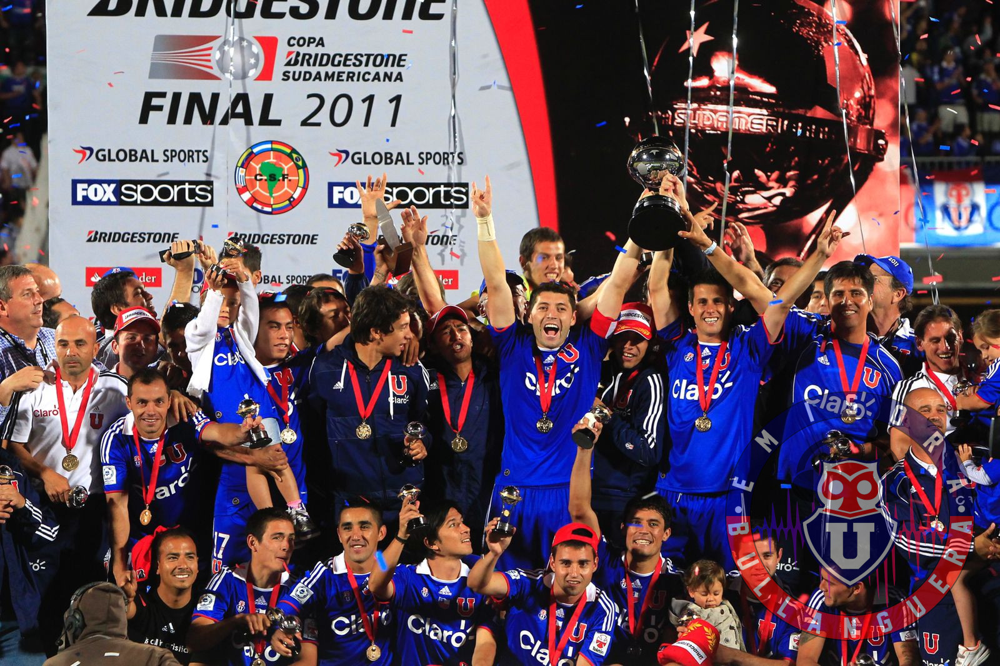

El Club Universidad de Chile, fundado el 24 de mayo de 1927, es uno de los equipos más emblemáticos del fútbol chileno. Conocido como "La U", tiene una rica historia que incluye su origen como club universitario y su evolución hasta convertirse en un símbolo del fútbol nacional.
Logros Deportivos
La U ha conquistado 18 títulos de Primera División y la Copa Sudamericana 2011, siendo el primer equipo chileno en ganar un torneo internacional. Su legado incluye grandes figuras como Leonel Sánchez y Marcelo Salas.

La Hinchada
Los hinchas de la Universidad de Chile, conocidos como los "Bulla", son famosos por su pasión y lealtad. Llenan el Estadio Nacional con cánticos y banderas, creando un ambiente único en cada partido.